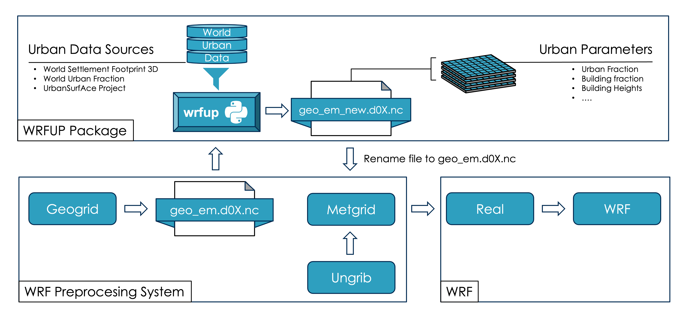

wrfup: WRF Urban Parameters Toolkit
Welcome to the wrfup documentation! A python tool to integrate high-resolution, real-world urban data into WRF (Weather Research and Forcast). It automatically downloads, calculates, and ingests the needed urban fields directly into WRF geo_em files. Using wrfup, users can enhance urban weather simulations with any of the WRF’s urban canopy parameterizations, including SLUCM, BEP, and BEP+BEM.
{kind=link}
Overview
wrfup is a Python tool designed to streamline the urban data preparation of urban climate simulations. It automatically:
Downloads urban morphology data like building heights and urban fraction from sources of high resolution global datasets.
Calculates the necessary urban fields for WRF, such as URB_PARAM and FRC_URB2D.
Ingests these fields directly into WRF’s geo_em files, ensuring a fine representation of urban areas in your simulations.
Workflow Diagram
The following diagram shows how wrfup integrates into the WRF preprocessing workflow:
Sections:
- Installation
- Usage
- Features
- wrfup package
main()download_and_extract_zip()download_tiles()get_tile_names_in_aoi()get_total_download_size()lat_lon_to_tile_indices()merge_tiles()add_frc_urb2d_field_if_not_exists()add_urb_param_fields_if_not_exists()calculate_frc_urb2d()calculate_urb_param()crop_opened_tiff_by_lat_lon_bounds_and_return_mosaic()check_geo_em_file()clean_up()get_lat_lon_extent()Info
—